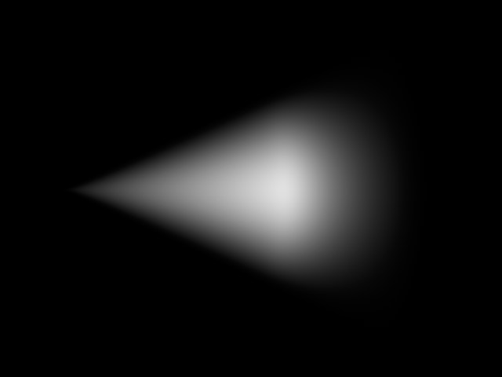
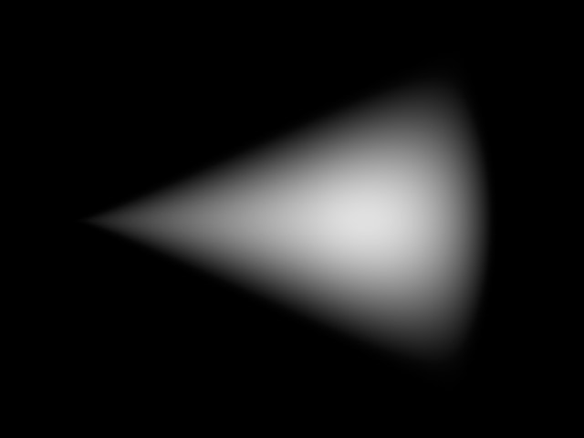
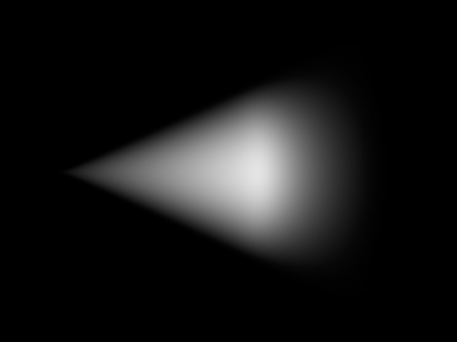
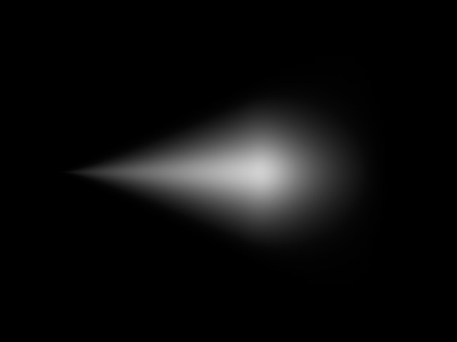
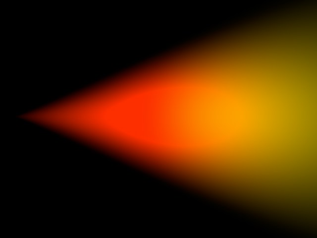
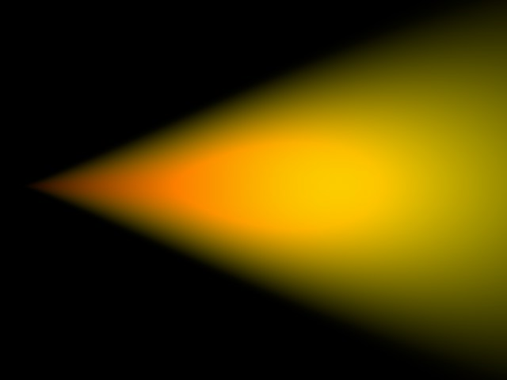
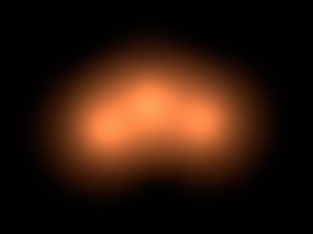
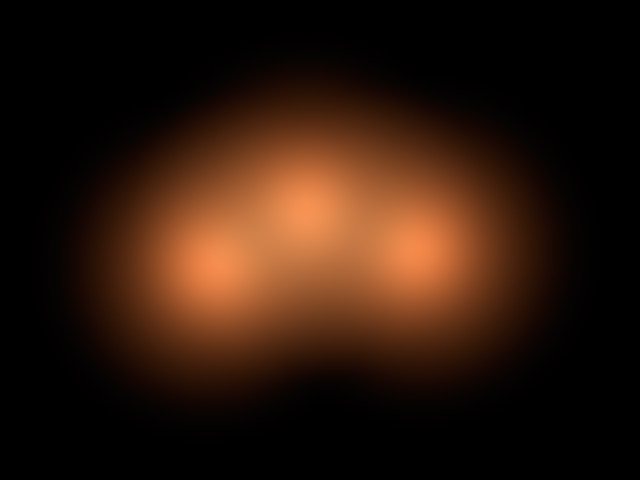
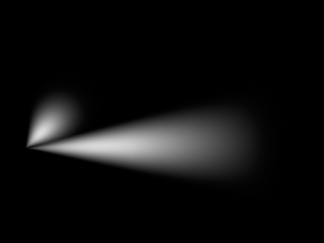
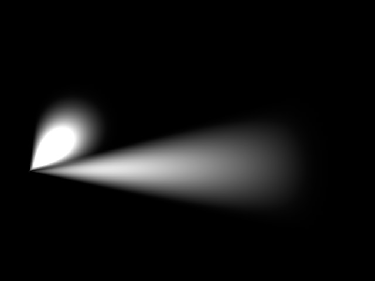

可见
衰减是光线密度的降低，可见灯光的轴向衰减是标准的100%，它表示从光源的起点到远端，可见灯光的密度会从100%下降到0%。因此，如果在将衰减设为10%，边缘外部的可见度会变成90%。启用或关闭使用衰减可以开关衰减。
100% 衰减。 |
0% 衰减。 |
边缘衰减只有在使用聚光灯时可用。边缘衰减决定了在光锥边缘处光线密度的减少程度。如果设为0%（或者取消勾选使用边缘衰减），会产生一个硬边缘的可见灯光。如果设为100%，可见灯光会从光锥中间到外边缘逐渐衰减，直到变为0%。
0% 边缘衰减。 |
100% 边缘衰减。 |
这个选项只有在使用聚光灯时可用，并且需要开启使用边缘衰减。正常情况下，内部颜色会沿着聚光灯光源的Z轴线性地变为外部颜色。但是，启用着色边缘衰减还会让内部颜色从内部角度放射状地向外散布到外部颜色。
不启用着色边缘衰减。 |
启用着色边缘衰减。 |
低于内部距离的可见灯光密度会保持100%，衰减会从这个距离开始。
在内部距离和外部距离之间，可见灯光密度会从100%变为0%。
当使用泛光灯时，可以使用这三个相对比例来修改每个轴向的外部距离比例。
采样属性与可见体积光有关。
调节这个数值会影响可见灯光体积阴影的计算精细程度。数值越大计算就会越粗略（但是更快速），数值越小计算越精细，但是花费的时间更多。
采样属性的数值是按全局单位来度量的，这个数值决定了可见灯光中的阴影采样的精细程度。这个数值通常是光源半径的1/10到1/1000。增加这个数值，渲染速度会显著提高，但是场景中某些部分的采样会十分粗糙，出现采样的不自然痕迹。
采样距离的建议
要制作良好的光效，例如光线透过裂缝或从石柱后面发射出来，需要将采样属性设为很低的数值。而另一方面，如果一个灯光被完全盖住看不到任何光线穿出，则可以使用一个较大的数值。
要明确这一点，可以参考下面的示例：图中南瓜的半径是150单位，可见体积光的半径（外部距离）是700单位。
采样属性：10；渲染时间：105秒；体积光看起来不错。
采样属性：20；渲染时间：60秒；这时从嘴巴和右眼发射出的光线能看出不自然感。
采样属性：40；渲染时间：35秒；可以清晰地看到可见灯光的光线丢失了连贯的边缘。
采样属性：80；渲染时间：23秒；废片。
为什么体积光在渲染时会消耗这么多时间？
当光线碰到一个光锥时，它不是唯一需要计算强度的光线。对光线的每个部分，CINEMA 4D 都需要查找光锥内可能会产生投影的对象。因此对每个部分都需要从光源发出光线进行额外的光线跟踪计算。
因为在不可能将烟雾中的分段收缩到一定长度以下，因此需要使用一个近似值；光锥的长度会被划分为一些相等的部分。
假设光线跟踪的光线触碰到了光锥，其起点和终点的距离是1,000单位，采样属性设为50单位，这时强度数值和阴影线需要计算20次（1000/50）。采样属性越小，计算时间就越长。
即使只划分了五个部分（那么在上面的示例中采样属性为200），比起没有体积光的情况，每个光线跟踪光线和每次与光锥接触的计算也需要增加五倍。使用越来越精细的细分，所需要的处理时间会很快变成天文数字。
为什么不使用固定的采样数量？
如果光线跟踪触碰到的是光锥的起始点，它的入点和出点之间的距离可能是100单位。但是如果触碰到的是光锥的远端，那么距离可能会增大到5,000单位以上。
因此如果使用了固定的采样值，光锥尖端处会进行大量不必要的运算，而在光锥远端又会太少（这会产生不自然感）。
这个数值表示可见光的亮度。
它会决定光锥的暗度。如果尘埃数值大于0%，亮度会减小，而不是增加。
如果要看到尘埃的全部效果，需要相应降低灯光亮度。
下图中能清楚地看到普通灯光和设置了灰尘地灯光之间地差别。左边是一个明亮地可见灯光，右边则是一个灰暗的像煤灰一样的灯光。
原则上尘埃可以配合粒子一起使用来创建真实的火焰和烟雾效果。
这会产生不规则的可见灯光，可以用来防止出现的带状或等高线外观的可见灯光。
使用渐变可以创造更多变得颜色和亮度渐变效果。
还需要在可见标签页中启用使用衰减。
常规标签页的强度也会影响可见灯光的亮度！
如果不启用使用渐变选项，那么在细节标签页中设置的渐变是无效的。
如果你想要将可见灯光与其他光源进行混合，可以启用这个选项。
启用附加。 |
未启用附加。 |
这个选项可以防止光线过曝。亮度会降低到过曝效果消失。
适合亮度。 |
未启用适合亮度。 |